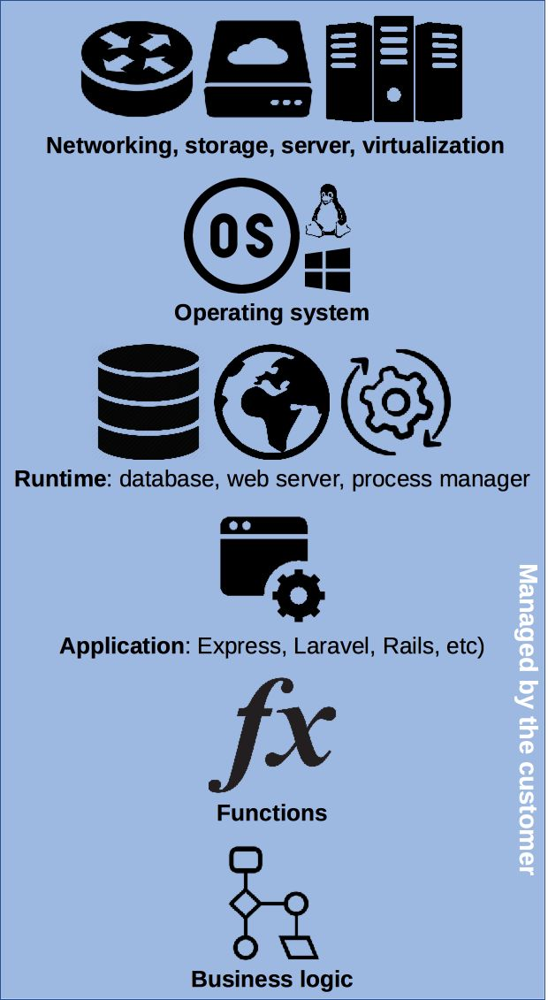
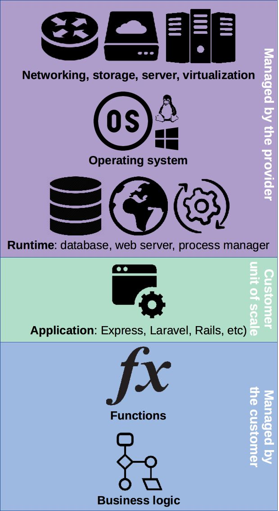

# Cloud Computing Learn what cloud computing is and about the common service models available today. This material is part of [web development courses](https://github.com/MediaComem/comem-webdev) for [Media Engineering](https://heig-vd.ch/formations/bachelor/filieres/ingenierie-des-medias). --- ## Client-server model .breadcrumbs[<a href="#1">Cloud Computing</a>] The [client-server model][client-server-model] is one of the main ways distributed and networked computer systems are organized today. In this model, **servers** share their resources with **clients**, who **request a server's content or services**. <p class='center'><img class='w65' src='images/client-server.jpg' /></p> > The communication is not only one way. > In modern web applications, servers may also **push data to their clients**. --- ### Types of servers .breadcrumbs[<a href="#1">Cloud Computing</a> > <a href="#2">Client-server model</a>] A server can provide many different kinds of content or services: * A [**file server**][file-server] provides shared disk access accessible over the network, to store files such as text, image, sound or video. * A [**database server**][db-server] houses an application that provides database services to other computer programs. * A [**web server**][web-server] can serve contents over the Internet. * An [**application server**][app-server] provides an environment to run web applications. <p class='center'> <img height='150px' src='images/file-server.png' /> <img height='150px' src='images/db-server.png' /> <img height='150px' src='images/web-server.png' /> <img height='150px' src='images/app-server.png' /> </p> These are just a few examples. There are many [types of servers][server-types] depending on the scenario and the resources you want to provide. --- ### [Internet hosting][internet-hosting] .breadcrumbs[<a href="#1">Cloud Computing</a> > <a href="#2">Client-server model</a>] Not every individual and organization has access to vast computer resources. Some companies provide Internet servers that can be owned or leased by customers. One common example is [web hosting][web-hosting], where server space is provided to make websites accessible over the Internet. .grid-33[ [**Dedicated hosting**][dedicated-hosting] Customers get their own **physical server(s)** and gain full control over it. They are responsible for the security and maintenance of the servers. ] .grid-33[ [**Virtual hosting**][virtual-hosting] Using [virtualization][virtualization], physical server resources can be divided into **virtual servers**. Customers may have root access to their own virtual space. ] .grid-33[ [**Managed/shared hosting**][shared-hosting] Multiple websites (from a few to a few hundred) are placed on the same server and **share a common pool of resources** (e.g. CPU, RAM). This is the simplest but least performant model. ] --- ## Cloud computing .breadcrumbs[<a href="#1">Cloud Computing</a>] .grid-30[ [Cloud computing][cloud] is nothing new. It's simply a **pool of configurable computer system resources**. These resources may be **servers**, or **infrastructure** for those servers (e.g. network, storage), or **applications** running on those servers (e.g. web applications). ] .grid-70[ <p class='center'><img class='w100' src='images/cloud.png' /></p> ] --- ### Why use cloud computing? .breadcrumbs[<a href="#1">Cloud Computing</a> > <a href="#5">Cloud computing</a>] Cloud computing resources can be **rapidly provisioned** with **minimal management** effort, allowing great **economies of scale**. Companies using cloud computing can **focus on their core business** instead of expending resources on computer infrastructure and maintenance. .grid-50[ **Advantages** Pay-as-you-go models **minimize up-front computer infrastructure costs**. Allows to more rapidly **adjust to fluctuating and unpredictable computing demands**. ] .grid-50[ **Disadvantages** **Limited customization** options (since you do not have complete control over the infrastructure). **Security and privacy** can be a concern depending on a business's legal requirements. ] --- ### Deployment models .breadcrumbs[<a href="#1">Cloud Computing</a> > <a href="#5">Cloud computing</a>] .grid-33[ **Private cloud** Cloud infrastructure operated solely **for a single organization**, managed and hosted internally or by a third party. These clouds are very capital-intensive (they require physical space, hardware, etc). **Providers:** Microsoft, IBM, Dell, VMWare, HP, Cisco, Red Hat. ] .grid-33[ **Public cloud** Cloud services **open for public use**, provided over the Internet. There is little to no technical difference between private and public clouds, but security considerations might differ. **Platforms:** [Amazon Web Services][aws], [Google Cloud Platform][google-cloud], [Microsoft Azure][azure]. ] .grid-33[ **Hybrid cloud** Composition of two or more clouds bound together to benefit from the advantages of multiple deployment models. For example, a platform may store sensitive data on a private cloud, but connect to other applications on a public cloud for greater flexibility. ] .container[ There also are a few [other deployment models][other-deployment-models], for example **distributed clouds** where computing power can be provided by volunteers donating the idle processing resources of their computers. ] --- ### Public clouds .breadcrumbs[<a href="#1">Cloud Computing</a> > <a href="#5">Cloud computing</a>] Most public **cloud computing providers** such as Amazon, Google and Microsoft **own and operate the infrastructure** at their data center(s), and **provide cloud resources via the Internet**. For example, the Amazon Web Services cloud was [initially developed internally][aws-history] to support Amazon's retail trade. As their computing needs grew, they felt the need to build a computing infrastructure that was **completely standardized and automated**, and that would **rely extensively on web services** for storage and other computing needs. As that infrastructure grew, Amazon started **selling access to some of their services**, initially virtual servers, as well as a storage and a message queuing service. Today Amazon is one of the largest and most popular cloud services provider. --- class: center, middle ## Service models .breadcrumbs[<a href="#1">Cloud Computing</a>] <img class='w45' src='images/xaas.jpg' /> --- ### What can I get? .breadcrumbs[<a href="#1">Cloud Computing</a> > <a href="#9">Service models</a>] These are the main service models offered by cloud providers. Model | Acronym | What is provided | Example :--- | :--- | :--- | :--- [Infrastructure as a Service][iaas] | **`IaaS`** | Virtual machines, servers, storage, load balancers, network, etc. | [Amazon Web Services][aws], [Google Cloud][google-cloud], [Microsoft Azure][azure] [Platform as a Service][paas] | **`PaaS`** | Execution runtime, database, web server, development tools, etc. | [Cloud Foundry][cloud-foundry], [Heroku][heroku], [OpenShift][openshift] [Function as a Service][faas] | **`FaaS`** | Event-based hosting of individual functions. | [AWS Lambda][aws-lambda], [Azure Functions][azure-functions], [Cloud Functions][cloud-functions] [Mobile Backend as a Service][mbaas] | **`MBaaS`** | Cloud storage, computing services and APIs for mobile applications. | [CloudBoost][cloudboost], [Firebase][firebase] [Software as a Service][saas] | **`SaaS`** | Web applications such as CRM, email, games, etc. | [Dropbox][dropbox], [Gmail][gmail], [Slack][slack] --- ### On premise data center .breadcrumbs[<a href="#1">Cloud Computing</a> > <a href="#9">Service models</a>] .grid-40[  ] .grid-60[ As an introduction to cloud service models, this is a representation of the various technological layers you need to put in place to deploy web applications in a modern cloud infrastructure. If you have your own data center, you need to install and configure all of these layers yourself. As you will see, the various **cloud service models abstract away part or all** of these layers, so that you don't have to worry about them. ] --- ### Infrastructure as a Service (IaaS) .breadcrumbs[<a href="#1">Cloud Computing</a> > <a href="#9">Service models</a>] .grid-40[ <img class='w100' src='images/stack-iaas.jpg' /> ] .grid-60[ [**IaaS**][iaas] provides fundamental IT infrastructure like **storage, networks and virtual machines** from the provider's data center(s). The customer provides an **operating system image**, for example [Ubuntu][ubuntu], which is run in a virtual machine by the provider. The VM is the **unit of scale**, meaning that the customer pays per virtual machine, usually hourly. The customer does not manage the physical infrastructure but has **complete control over the operating system** and can run **arbitrary software**. Setting up the runtime environment (databases, web servers, monitoring, etc) for applications is the responsibility of the customer. ] --- #### How does IaaS work? .breadcrumbs[<a href="#1">Cloud Computing</a> > <a href="#9">Service models</a> > <a href="#12">Infrastructure as a Service (IaaS)</a>] System administrators connect to virtual machines run by the provider in their data center. They have complete control over the operating system. To run a website, they must set up the runtime environment themselves. <img class='w100' src='images/iaas-workflow.jpg' /> --- ### Platform as a Service (PaaS) .breadcrumbs[<a href="#1">Cloud Computing</a> > <a href="#9">Service models</a>] .grid-40[  ] .grid-60[ [**PaaS**][paas] platforms provide a **managed runtime environment** where customers can run their applications without having to maintain the associated infrastructure. All the customer has to do is provide the **application or software**. The platform will run it with the necessary additional components (e.g. database). Pricing is per application, often hourly. This is **quicker** because applications can be deployed with minimal configuration, without the complexity of setting up the runtime. More time can be spent on developing the application. However PaaS is **less flexible** since control of the runtime environment and its configuration is limited. It also tends to be more expensive at larger scales. ] --- #### How does PaaS work? .breadcrumbs[<a href="#1">Cloud Computing</a> > <a href="#9">Service models</a> > <a href="#14">Platform as a Service (PaaS)</a>] Developers send an application, for example a Laravel site written in PHP, to the provider, typically via Git. The managed runtime environment then detects the type of application and runs it, along with the necessary resources, and serves it over the Internet. <img class='w100' src='images/paas-workflow.jpg' /> --- ### Function as a Service (FaaS) .breadcrumbs[<a href="#1">Cloud Computing</a> > <a href="#9">Service models</a>] .grid-40[ <img class='w100' src='images/stack-faas.jpg' /> ] .grid-60[ [**FaaS**][faas] platforms store **individual functions** and run them in response to events. Customers write simple functions which can access resources such as a database, then define in which circumstances they are run (e.g. in response to client requests). This model completely abstracts away both the infrastructure, and the complexity of structuring an application. The customer has no direct need to manage resources. In contrast with IaaS and PaaS, nothing is kept running if nothing happens. Functions are loaded and run as events occur. **Pricing is based on execution time** (per millisecond) rather than application uptime. The customer has little to no control over infrastructure, runtime and application layers. ] --- #### How does FaaS work? .breadcrumbs[<a href="#1">Cloud Computing</a> > <a href="#9">Service models</a> > <a href="#16">Function as a Service (FaaS)</a>] Developers write individual functions and publish them to the provider. The platform provides various services to connect these functions together and to various resources for storage, communication, monitoring, etc. <img class='w100' src='images/faas-workflow.jpg' /> --- ### Mobile Backend as a Service (MBaas) .breadcrumbs[<a href="#1">Cloud Computing</a> > <a href="#9">Service models</a>] .grid-40[ <img class='w100' src='images/stack-mbaas.jpg' /> ] .grid-60[ [**MBaaS**][mbaas] provides **cloud storage and APIs** to power web and mobile applications, with features such as user management, push notifications and social network integration. A working backend is provided out of the box with this model. The customer simply **uses the provided cloud APIs** in their frontend application, and may configure how to handle data access and events. This is the **quickest** solution to develop a frontend application, since much less work needs to be done on the backend. But it's also **less flexible** as you must use the specific services provided by the platform. It also produces the most **vendor lock-in**: it would be difficult to switch a mobile application from one MBaaS platform to another. ] --- ### Software as a Service (SaaS) .breadcrumbs[<a href="#1">Cloud Computing</a> > <a href="#9">Service models</a>] .grid-40[ <img class='w100' src='images/stack-saas.jpg' /> ] .grid-60[ [**SaaS**][saas] provides **on-demand** software over the Internet. The software is **fully developed, managed and run by the provider**, so the customer has nothing to do except pay and use it. Pricing is often per user and monthly. This model offers the **least flexibility**, as the customer has no control over the operation or deployment of the software, and limited control over its configuration. ] --- ### Level of abstraction .breadcrumbs[<a href="#1">Cloud Computing</a> > <a href="#9">Service models</a>] These models can be ordered by increasing level of abstraction, from IaaS being the lowest level and most flexible service model, to SaaS being the highest level and fastest-to-use service model. <p class='center'><img class='w100' src='images/cloud-abstraction.png' /></p> --- class: center, middle ## Trends .breadcrumbs[<a href="#1">Cloud Computing</a>] <img class='w60' src='images/trends.png' /> What's happening in the clouds? --- ### Service-oriented architecture (SOA) .breadcrumbs[<a href="#1">Cloud Computing</a> > <a href="#21">Trends</a>] [Service-oriented architecture][soa] is a software design style where services are provided by application components over a network. This is popular in the cloud as it is easy to provision resources to deploy new components, instead of having large monolithic applications. <p class='center'><img class='w80' src='images/soa.png' /></p> --- ### Microservices .breadcrumbs[<a href="#1">Cloud Computing</a> > <a href="#21">Trends</a>] There is a tendency in recent years to try to **decompose** monolithic applications into smaller, more flexible [microservices][microservices] (a variant of service-oriented architecture). The [Function-as-a-Service (FaaS)][faas] model is one more step in the same direction. <p class='center'><img class='w65' src='images/monolithic-microservices-faas.png' /></p> This allows development to be parallelized as teams can work autonomously on separate services, or even individual functions. It also faciliates [continous delivery][cd] as each component can be deployed independently. --- ### Serverless computing .breadcrumbs[<a href="#1">Cloud Computing</a> > <a href="#21">Trends</a>] The [Function-as-a-Service (FaaS)][faas] and [Mobile-Backend-as-a-Service (MBaaS)][mbaas] are often considered to be part of the [**serverless computing**][serverless] model. The name "serverless" does not mean that there is no server. It just means that **the server is abstracted** and managed by the platform provider. .grid-50[ **Advantages** * **Productivity**: the developer can focus on developing functions or business logic. * **Cost-effective**: only the resources used are billed (whereas PaaS or IaaS resources may be underutilized). * **Scalable**: the provider automatically scales resources to the demand. ] .grid-50[ **Disadvantages** * **Performance**: infrequently-used code may be "shut down" when not in use, resulting in greater latency. * **Resource limits**: not suited to some workloads like high-performance computing. * **Monitoring and debugging**: identifying performance problems may be more difficule than with traditional code. ] --- ## TODO .breadcrumbs[<a href="#1">Cloud Computing</a>] * Dedicated/physical vs. virtual server/hosting (virtual server) * Additional diagrams for IaaS + PaaS + FaaS + MBaaS * Public cloud: security and privacy * SOA, EaaS, https://en.wikipedia.org/wiki/Service-oriented_architecture * Containers, CaaS [app-server]: https://en.wikipedia.org/wiki/Application_server [aws]: https://aws.amazon.com/ [aws-history]: https://en.wikipedia.org/wiki/Amazon_Web_Services#History [aws-lambda]: https://aws.amazon.com/lambda/ [azure]: https://azure.microsoft.com/ [azure-functions]: https://azure.microsoft.com/en-us/services/functions/ [cd]: https://en.wikipedia.org/wiki/Continuous_delivery [client-server-model]: https://en.wikipedia.org/wiki/Client%E2%80%93server_model [cloud]: https://en.wikipedia.org/wiki/Cloud_computing [cloudboost]: https://www.cloudboost.io/ [cloud-foundry]: https://www.cloudfoundry.org/ [cloud-functions]: https://cloud.google.com/functions/ [db-server]: https://en.wikipedia.org/wiki/Database_server [dedicated-hosting]: https://en.wikipedia.org/wiki/Dedicated_hosting_service [dropbox]: https://www.dropbox.com/ [faas]: https://en.wikipedia.org/wiki/Function_as_a_service [file-server]: https://en.wikipedia.org/wiki/File_server [firebase]: https://firebase.google.com/ [gmail]: https://www.google.com/gmail/ [google-cloud]: https://cloud.google.com/ [heroku]: https://www.heroku.com/ [iaas]: https://en.wikipedia.org/wiki/Infrastructure_as_a_service [internet-hosting]: https://en.wikipedia.org/wiki/Internet_hosting_service [mbaas]: https://en.wikipedia.org/wiki/Mobile_backend_as_a_service [microservices]: https://en.wikipedia.org/wiki/Microservices [openshift]: https://www.openshift.com/ [other-deployment-models]: https://en.wikipedia.org/wiki/Cloud_computing#Others [paas]: https://en.wikipedia.org/wiki/Platform_as_a_service [saas]: https://en.wikipedia.org/wiki/Software_as_a_service [server-types]: https://en.wikipedia.org/wiki/Server_(computing)#Purpose [serverless]: https://en.wikipedia.org/wiki/Serverless_computing [shared-hosting]: https://en.wikipedia.org/wiki/Shared_web_hosting_service [slack]: https://slack.com/ [soa]: https://en.wikipedia.org/wiki/Service-oriented_architecture [ubuntu]: https://www.ubuntu.com/ [virtual-hosting]: https://en.wikipedia.org/wiki/Virtual_private_server [virtualization]: https://en.wikipedia.org/wiki/Virtualization [web-hosting]: https://en.wikipedia.org/wiki/Web_hosting_service [web-server]: https://en.wikipedia.org/wiki/Web_server